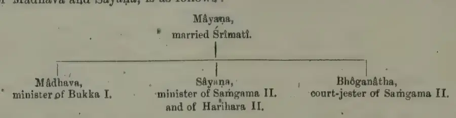

Biṭraguṇṭa grant of Saṁgama II. ; Śaka-Saṁvat 1278
No. 4.— BITRAGUNTA GRANT OF SAMGAMA II.
SAKA-SAMVAT 1278.
BY H. KRISHNA SASTRI; BANGALORE.
The subjoined inscription has already been noticed by Mr. R. Sewell in his Lists of Antiquities, Vol. II. p. 8, No. 58. The original was lent by Dr. C. D. Macleane, Collector of Nellore, in whose office it is preserved, to Dr. Hultzsch, who has kindly placed it at my disposal for publication. It consists of five copper-plates, measuring on an average 10" by 5¼". There is a hole of about 7/8" in diameter at the top of each plate for the usual ring, which is however lost. The order of the five plates is marked on the left margin of each plate with one, two, three, four and five notches consecutively. Besides, they are numbered by the ordinary Telugu numerals on the top of the back of each successive plate. The first four plates bear writing on both sides; and the last is inscribed on the inner side only, while its second side bears the numéral "five" at the top. The first side of the first plate has the symbols of the sun and moon at the left and right top-corners respectively, and below the moon the figure of a bull, tied by a rope to a tripod, which is surmounted by a trident. The occurrence of such symbols, quite common in stone-inscriptions, is rather rare on copper-plates. The lines are written across the breadth of the plates and number about twenty on each side. The raised rims appear to have been flattened and filed on the borders, and, consequently, some letters which run into them, have been partly injured. Nevertheless, the inscription is in good preservation, and, with very few exceptions, every letter of it can be made out with certainty.
The language of the inscription is Sanskrīt verse of various metres, written in faint, but boldly engraved Telugu characters. The chief peculiarity of the alphabet is the manner in which the aspirate letters are distinguished from the unaspirated ones. The letters da and dha are distinguished as in Old Kanarese or Telugu;— the first by an opening on the right side, and the second by being fully closed up. But in lines 24 and 163, dha is written in its modern form, i.e. with the addition of a vertical stroke below. The difference which the writer has attempted to keep up between ba and bha, is rather complex. The top-stroke (talekaṭtu, as it is called in Kanarese, or talakaṭtu in Telugu) is considered sufficient to distinguish the aspirate from the unaspirated, except in cases where such a stroke is to be omitted in writing, as when other vowels but a, u and û are affixed to the consonant, and when it appears conjunct with another. There are several cases, too, in which both the talakaṭtu and the downward stroke appear in the same letter (ll. 120, 127, 137, 141, 144, etc.). It might be observed that, in ambhôruha in line 11, bhô is written as in Old Kanarese or Telugu, with an opening in the centre below. The downward stroke of tha and gha is dispensed with, because no confusion could arise between them and their corresponding unaspirated forms; whereas, in the case of dha and pha, it is retained as the only mark of distinction from the unaspirated. The letters ṭa, śa, sha and ṭa are
1 The same official title occurs in Ind. Ant. Vol. XIV. p. 12, and Vol. XVIII. p. 145, and the slightly different form rahaśika (for rahasyaka), Vol. XIII. p. 121.
comparatively old in their formation. The vowels i and ī, o and ō, though distinguished in some cases by a partial and complete loop on the top respectively, are however often confounded. To avoid constant corrections arising from close transcription, I have, in the case of i and ī, always adopted that form which the context proves to be correct. The vowels é, ai and au are the undeveloped forms of their modern modifications in Telugu. The é of práyépa in line 53, and the length of ō of bhágō in line 146, are shown as in the modern Telugu character.
As regards orthography,— dhdha for ddha frequently occurs (ll. 20, 101, 108, 157 and 163). The redundant use of an anusvára before a conjunct nasal is quite common (ll. 10, 12, 48, 113, 131, 136, etc.). As in other inscriptions, a consonant which follows r, is sometimes doubled. In lines 15, 20, and 21 the pa of Kamppa, and in line 31 the ya of sainyyuga are doubled after an anusvára. A curious mistake is committed in line 60, where kadáchiptriyam is written for kadáchit=priyam. There are a number of other graphical peculiarities which are due to the influence of the Telugu pronunciation of Sanskrit. Except in nirvritim in line 59, ri is generally represented by ru. In lines 66 and 122, both ri and u, li and u are respectively affixed to the same consonant, and once (l. 181) ri is represented by ri. It is worth noticing that the word nátha, which occurs four times in the inscription (ll. 50, 52, 161 and 189), is spelt in the first three cases with an anusvára before tha. This may be due to the tendency of the Telugu language to insert an anusvára in such cases (compare tammuđu and tammuñuđu). The spelling brañhmassom (ll. 178 and 179 f.) for brahmasvañ, saijñi (l. 87) for sainjñi, saijña (l. 186) for sainjña, the prefixing of a y before i and é and vice versá (ll. 21, 22, 23, 44, 65, 160, 163 and 180) are also due to the Telugu pronunciation of Sanskrit.
The inscription opens with an invocation to the Boar-incarnation of Vishnu (verse 1). Saingama I., the first historical ancestor of the first Vijayanagara dynasty, is then introduced without any reference to his mythical descent from the Moon; as is done in other Vijayanagara grants (verse 2). He had five sons,— Harihara, Kampa, Bukka, Márapa and Muddapa (verses 3 and 4). Of these, the first two ruled one after the other. Harihara is said to have defeated the Muhammadans (verse 5). Kampa (verse 4) or Kampaña (verse 6) had a son, called Saingama II. (verse 7), during whose time the subjoined inscription was written. Of this king we learn nothing but a number of birudas (verse 11). The inscription records the grant of the village of Bitragunṭa (verses 20, 21) or Bittarakunṭa (verse 19) to twenty-eight Bráhmaṇas, whose names and gótras are specified in verses 27 to 33; and refers incidentally to the grant of another village, viz. Simkésari (verse 24). Both grants were made at the suggestion of the king's spiritual preceptor, the Śaiva philosopher Śrikanṭhanátha (verse 12 and line 189), after whose name the village of Bitragunṭa received the surname Śrikanṭhapura (verses 21, 34, 35 and 42). The date of the first grant was the new-moon day of the third month of Śaka-Sainvat 1278 (in numerical words and figures), the cyclic year Durmukha. The inscription was written by Bhóganátha, the court-jester of Saingama II. (verse 35). At the end of the document (l. 184), the king is stated to have affixed by his own hand the name of Śri-Virūpáksha, the tutelar deity of the city of Vijayanagara (verse 42). This explains the origin of the colophons Śri-Virūpáksha, Śri-Veikaṭésa or Śri-Ráma at the end of other Vijayanagara inscriptions.
The motive for making the grant under consideration is stated to have been twofold,—first, a request, or almost a compulsory demand, of the preceptor Śrikanṭhanátha, and, secondly, the king's own desire to procure immortality to his father (verses 17 and 20). The second statement further suggests that the expression pratyabdakálé in verse 20 means "at the anniversary (of his father's death)." The inscription does not inform us if the first or any following anniversary is meant. But the motive why the king made the grant, i.e. for procuring immortality to his father, gives us sufficient room for conjecture. It is a well-known Hindú notion that the spirit of a dead man will continue to be a Préta, or an evil spirit, until the
completion of all obsequial rites; and this completion is reached with the sápindya and ábdika ceremonies, which are to be observed at the end of one full year after the death. After this period, and through the several charities made during the final ceremonies, the Prêta is supposed to become one of the Manes, i.e. to become classed with the Pitridévas.1 Thus, it may be that the anniversary on which immortality or godhead was conferred on Kampa, was the first; and, if so, the date of Kampa's death and the accession of Sangama II. would be Śaka-Sarnvat 1277. But this is only a conjecture which requires corroboration.
The contents of the inscription furnish us with two important facts, viz. first, the distinct mention of the five sons of Sangama I., and, secondly, that of a grandson of his, by name Sangama II. Both these facts are valuable; for most of the inscriptions that contain a regular genealogy of the first Vijayanagara dynasty, mention only Harihara I. and Bukka I., the first and third sons of Sangama I., and ignore altogether the other three; and even the limited few that mention all the five sons of Sangama I.,2 are either open to suspicion or are imperfectly read. The importance of the second fact is even greater, inasmuch as it enables us to correct certain inferences which have been drawn from the colophon of the Mádhavíyá Dhátuvritti. This colophon reads as follows:— “The Mádhavíyá Vritti, composed by Sáyanáchárya (who was) the uterine brother of Mádhava, the son of Máyana, (and) the great minister of Sangamarâja, the son of Kamparâja, the glorious lord of the Eastern, Western and Southern oceans.”3 As the title indicates, the Mádhavíyá Dhátuvritti was dedicated by its author, Sáyanáchárya, to his brother Mádhaváchárya, who, as we learn from other sources, was the minister of Bukkana or Bukka I. of Vijayanagara.4 Further, Mádhaváchárya says of himself that “his mother (was) Śrímatī, his father (was) the famous Máyana, (and) his two uterine brothers (were) Sáyana and Bhôganátha, (who appeared to be his) mind and intelligence.”5 That Sangama, whose minister was Sáyana according to the Mádhavíyá Dhátuvritti, has been hitherto considered as identical with Sangama I., the father of Harihara I. and Bukka I. The present inscription, however,—which acquaints us with a king Sangama II., who, as the Sangamarâja of the colophon of the Mádhavíyá Dhátuvritti, was the son of Kampa, and which also mentions a certain Bhôganátha, who is probably identical with that Bhôganátha who, according to the commentary on the Paráśarasmriti, was the brother of Sáyana, shows that Sáyana must have been the minister of Sangama II., and not of Sangama I., who, in the present state of our epigraphical knowledge, is nothing more than a name. In the colophon of his commentary on the Śatapathabráhmaṇa, Sáyanáchárya calls himself the minister of king Harihara, who bore the titles of Rájádhirája and Rájaparamésvara.6 This can hardly refer to Harihara I., who claimed to be only a Mahámanđalésvara;7 and it must be assumed that Sáyana, who was originally the minister of Sangama II., subsequently held the same office under Harihara II. According to
1 See the Mitákshará on Yâjñavalkya, i. 253 f.— मार्कण्डेयः। प्रेतलोके तु वसतिर्नृणां वर्षे प्रकीर्तिता । . . . .
प्राक्तनैकीदृष्टसहितेन सपिण्डीकरणं प्रेतत्वनिवृत्ता पितृत्वं प्राप्नोतीत्यवगम्यते ॥
2 Colebrooke's Miscellaneous Essays, Madras reprint, Vol. II. pp. 254 ff.; Mr. Rice's Mysore Inscriptions, p. 277 f.; Mr. Sewell's Lists of Antiquities, Vol. II. No. 79. Dr. Hultzsch, who has examined the original of the last-mentioned inscription, considers it a forgery, fabricated in the time of the third Vijayanagara dynasty.
3 श्रीमत्वर्वपश्चिमदक्षिणसमुद्रादीश्वरकम्पराजसुतसंगमराजमहामन्त्रिमायणपुत्रमाधवसहीदरसायणाचार्य[कृता*] माधवीया वृत्ति[*]. The Berlin MS., as transcribed by Professor Weber, Berlin Catalogue, Vol. I. p. 222, No. 789, reads संडासजमहामन्त्रिण.
4 See the introduction to Mádhava's commentary on the Paráśarasmriti in Professor Aufrecht's Oxford Catalogue, p. 264; and Dr. Fleet's abstract of a Banaváse inscription, Ind. Ant. Vol. IV. p. 206, No. 2.
5 श्रीमती जननी यस्य सुकीर्तिर्मायणः पिता। सायणी भीगनाथश्च मनीवृद्धी सहीदरौ ॥; Professor Aufrecht's Oxford Catalogue, l. c.
6 See Professor Weber's Berlin Catalogue, Vol. II. p. 73.
7 See his Bâdâmi inscription of Śaka-Sarnvat 1261; Ind. Ant. Vol. X. p. 63.
Professor Aufrecht,1 he died in A.D. 1387. All that we can at present gather regarding the genealogy of Mâdhava and Sâyaṇa, is as follows :—

According to Mr. Sewell's Lists of Antiquities, Vol. I. p. 142, Bitragunṭa, the first of the villages granted, is situated 7 miles south by west of Kâvali which is 32 miles from Nellur (Nellore) and is the head-quarters of the Kâvali tâlukâ in the Nellore district. Its situation is described in the inscription as being 3 yôjanas north of the town of Vikramasimhapura in the district called Pâkavishaya, which was situated on the shore of the Eastern ocean, i.e. the Bay of Bengal (verse 19). I do not know if the name Vikramasimhapura still exists; but the name Pâka survives in the name of a certain sect of Telugu-speaking Śâdras in the Mysore territory, who profess to come from Pâkanâdu, the country of Pâka, and are as such called Pâkanâtis. The other village, Simkêsari, is said to be situated in the district called Mulikidêsa on the northern bank of the Pennâ, i.e. the well-known Pennêr river, and to the north of the Śaiva temple at Pushpâchala. (verse 24), which is identical with Pushpagiri, 8 miles north of Kadâpa (Cuddapah). A native of Pushpagiri informed me that close to Pushpagiri is a village named Sunkêsaru, which appears to be the same as the Simkêsari of the grant. It may be also remarked that a certain class of Smârta Brâhmaṇas, who call themselves Mulikinâduvâru, profess to have emigrated from the Muliki country. The other places mentioned in the inscription as the boundaries of the two villages (verses 22 and 25) I am unable to identify. But so much is certain that Saṅgama II. held portions of the present Nellore and Cuddapah districts, while his uncle Bukka I, was reigning at Vijayanagara, Saṅgama II. can scarcely have been dependent on Bukka I., as he would have otherwise referred to the latter as his overlord in his inscription. The fact that he represents his own father Kampa as the actual successor of Harihara I. also suggests that he considered himself entirely independent of Bukka I.
TEXT.2
First Plate; First Side.
1 Catalogus Catalogorum, p. 711.
2 Read स्वाधीनीदार.
3 From the original copper-plates and ink-impressions of them.
4 Read रूपी.
9 मशक्तिः । राजा राजन्यकोटिप्रणतिपरि-
10 लुठंन्मौक्तिमाणिक्यरोचीराजीनीराज्य-
11 मानस्फुरदुरुचरणांभोरुहः(:)-
12 संगमेंद्रः ॥ [२*] तस्मादुदभवंन्पंच तनया-
13 श्शीर्यशालिनः । कल्यावनिरुहाः पूर्वं
14 कलशांबुनिधेरिव ॥ [३*] आदौ हरिहर-
15 क्षाभ्रुदय1 कंप्पमहीपतिः । ततो
16 बुक्कमहीपाल[:*] पश्चान्मारपमुद्दपौ ॥ [8*]
17 तत्र राजा हरिहरो धरणीमसिषच्चि-2
18 रं । सुत्रामसद्रुश3 येन सुरत्रा-
19 णः पराजितः ॥ [५*] तस्यानुज(:)श्चिरमशा-
20 द्वात्रीं कंप्पणभूपतिः । याथात्थं-
21 मभजंनाम यस्य कंप्पद्वतु-4
22 [द्विं]षां ॥ [६*] जयंत यिव5 जंबारेः
23 प्रद्युम्न यिव6 शार्ङिणः । तनयस्स-
First Plate; Second Side.
24 म[भू]द्वीरस्तस्य संगमभूधरः ॥ [७*]
25 यस्य 'दुष्टिमुदयद्दया-
26 रसामर्त्थिनामभिमतानु-
27 बंधिनीं । हंत नूनमनु-
28 यांति संस्प्रुहं9 कर्नकल्पतरुका-
29 मधेनवः ॥ [८*] यद्भुजाश्रयणजात-
30 कौतुका नापरं जयरमाभिव्रु-
31 खतो9 । संय्युगानि समुपेयु-
32 प्रो चिरादासिधारमनुतिष्ठति व्र-
33 तं ॥ [९*] यद्यशःप्रसरणेन भूय-
34 सा ह्लादमेयुषि परं जगत्रये10 [।]
35 अश्रुते विफलतां न चंद्रमाः केवलं
1 Read च्चाभ्रुदय.
2 Read °मशिष°.
3 Read सदशी.
4 Read कम्पयितु°.
5 Read इव जन्मारेः.
6 Read इव शाङ्गिणः.
7 Read दृष्टि.
8 Read सख्तुहं कर्ण.
9 Read वख्ती.
10 Read जगत्रये.
36 कुमुदिनीविकासनात् ॥ [१०*] श्रीमा-
37 न्प्राक्प्रत्यगब्धिद्वितयपरिव्रुढ(:)[सै]-1
38 ष2 भाषातिलंघिच्चुद्रक्ष्माभ्[३]-3
39 जंगः प्रतिभटधरणीपालसेना[वि]-
40 बाढः4 । माद्यंनागाश्वमर्त्या[धिप]-
41 तिगजघटापंचवक्त्रोभियाती-
42 त्युहुष्यंते यदीया[:*] [स्फुट]-
43 मिह बिरुदास्संततं वंदिब्रं-
44 दैः5 ॥ [११*] यित्थं6 सर्वगुणोपरंजनक-
45 लामीद्रुग्विधामेयुष-7
Second Plate; First Side.
46 स्तस्य क्षीणिपतेरपारयशसस्तत्वो-
47 पदेशक्रियां । कर्तुं कामपि वा-
48 सनामुप[न]यंन् कारु-
49 खवारांनिधि[:*] (i) श्रीमान्मंनिधि-
50 मादधत् पशुपधिः8 श्रीकंठनांथात्मना9 ॥ [१२*]
51 माहेश्वराणां तत्वानां मान्ये य-
52 स्मिन् प्रदर्शके [1*] प्राचामदशिं नांथा-10
53 नां प्रायेण नवता भुवि ॥ [१३*] य-
54 त्यादानतिमात्रेण यतीनां
55 मुक्तिरंतिके । क्रियते तप-
56 सा किंतु केवलं कायशोष-
57 णं ॥ [१४*] कैवल्यपदवीद्वारकवाटोद्वा-
58 टकर्मणि । कटाक्षाः कुंचिका यस्य
59 कांक्षतां तत्र निर्वृतिं ॥ [१५*] स कदाचि-
60 म्रियं11 शिष्यं संगमेंद्रमुपस्थि-
61 तं । न्यदिशहेशिको दुष्या12 निर्भरप्रे-
1 Read परिव्रुढ.
2 The form सैष is grammatically correct. See note 1 on the sútra सी ऽचि लीपे चेत्यादपूरणम्; Siddhāntakaumudi, Bombay edition of 1892, p. 15.
3 Read क्षाभ्०.
4 Read विभाडः (Kanarese).
5 Read हन्दैः.
6 Read इत्थं.
7 Read °मीदृग्विधा०.
8 Read पशुपतिः.
9 Read नायात्मना.
10 Read नाथा०.
11 Read कदाचित्प्रियं.
12 Read दृष्या ग्रिभर.
62 मगर्भया ॥ [१६*] अग्रहारं कमप्य-
63 व त्वया दापयितुं मम []
64 प्रीतिरस्ति ततः कश्चित्1 ग्रामो रा-
65 जंन् प्रदीयतां2 ॥ [१७*] यिति3 तस्य
66 गुरोराज्ञामीशिता धरणीभृ-4
67 तां । अग्रहीदंजलिं ग्रध्ननवनं-
68 [म्ने]ण मौक्तिना ॥ [१८*] पाकाख्यो विषयो
Second Plate; Second Side.
69 स्थपारमहिमा प्राचः पयी-
70 धेस्तटे तस्मिन् विक्रमसिंह्य-5
71 मित्यपि पुरं धत्ते लला-
72 मश्रियं । तस्याप्युत्तरतोत्रि-6
73 योजनमिताद्देशात् स्फुरत्युज्व-
74 लो7 ग्रामो विद्वरकुंटमित्यमु-
75 मदाद्राजा गुरोः प्रीतये ॥ [१८*] शाका-
76 द्दे नागशैलध्युमणिपरिमिते8
77 १२७८ दुर्मुखाद्दे वृतीय्ये9
78 मासि श्रीसंगमेंद्रो गुरुहित-
79 निरतस्संगमे चंद्रबान्वोः10 । प्रा[दा]-
80 व्रत्यद्दकाले निजपितुरमरत्वाम-
81 ये विद्रगुंटग्रामं त्रिंशन्मिता-
82 भ्य[:*] श्रुतिपथनिरताभ्यो मही-
83 देवताभ्यः ॥ [२०*] विद्रगुंटमितीह11
84 प्रथितापरनामशालिनस्तस्य [।*]
85 प्रकटयति स्म यमींद्रप्राय[:*]
86 श्रीकंठपुरमिति प्रख्यां ॥ [२१*] आ पू-
1 Read कश्चिद.
2 Read प्रदीयताम्.
3 Read इति.
4 To the bh of bhritām, both the vowels ri and u are attached in the original.
5 Read सिंह.
7 Read °लुज्ज्वली.
9 Read वृतीये.
6 Read °व्युत्तरतस्त्रि.
8 Read द्युमणि.
10 Read भान्वीः.
11 The Áryá metre, in which this verse is written, requires one short syllable more in the first páda. The form Bittarakumṭa, which occurs in line 74, would meet the deficiency.
91 गुदीचीनं3 दिशां क्रमात् ।
92 ग्रहाररत्नस्य सीमा-
93 संधिः प्रदर्शितः ॥ [२३*]
94 भून्मुलिकिप्रथामधिगत(:)-
95 स्त्रत्वास्ति पुष्पाजलो4 नाम
96 मनुत्तमं पुररिपोस्तस्योत्त-
97 रस्यां दिशि । पेनाया[:*]
अस्या-
98 रत्न च तटे सिक्केसरीति श्रुतं
99 ग्रामं पूर्नमदापयन्नुपक-
100 रात्९ ग्रामोपहारं गुरुः ॥ [२४*] आ सिं-
101 द्वोर्वक्कराख्याया आ च जं[पू]शि-
102 लोचयात्१० । आ बादरनदीकूला-
103 दा च केतनिकुंटतः ॥ [२५*] अस्य ग्रा-
104 मस्य११ चतसुष्वाशास्विति किल क्र-
105 मात् । सोमासंधिरभिज्ञेय[:*] सोमा-
106 भि(:)गुणसंपदां ॥ [२६*] तत्रैको हरि-
107 तान्ववायजनुषे [ऽ*]नंताय१२ बा-
108 ग(:)स्ततो वार्द्धश्वान्वयजन्मने ध्वि-
109 जनुषे१३ द्वौ पेद्दिभट्टाय च । भारद्वाज-
110 कुलोद्भवाय१४ तदनु१५ ध्वावेल्ल-
111 याख्याजुषे हारीताय च
112 वल्लवाय१६ मुनये दत्तस्तथै-
87 सलपाडभुवोप्या मल्लेकुंटसैञ्चि-1
88 कासारात् । आ पापटपुटसवि-
89 धादा वा लवणप्रभूतिकुल्या-
90 याः ॥ [२२*] इति 2प्राक्दक्षिणप्रत्य-
देशो-
Third Plate; First Side.
स्थानं-
स्फुट उत्त-
1 Read संज्ञि.
2 Read प्राग.
3 Read °गुदौचौनां.
4 Read पुष्पाचलो.
5 Read पूर्णमदापयन्नुपकराद.
6 Read जस्वश्लीचयात्.
7 Read चतसृष्वा९.
8 Read भाग.
9 Read द्विजनुषे.
10 Read °इवाय.
11 Read द्वावेल्ल०.
12 Read वल्लभाय.
Third Plate; Second Side.
| 113 | कः पुनः ॥ [२७*] कौडिंन्याय च बोम- |
| 114 | याय विदुषे · 1बाग(ः)स्तथैकस्त- |
| 115 | तः कौडिंन्याय2 तु मा- |
| 116 | धवाय धरणीदेवाय |
| 117 | चैकस्तथा । बागः3 कूचयभूस- |
| 118 | राय क्रुतिने4 श्रीवत्सगोत्राय च श्री- |
| 119 | वत्सान्वयसंभवाय च तथा श्रीरु- |
| 120 | द्रयाख्याभुते5 ॥ [२८*] भूयः कौशिक- |
| 121 | वंशलब्धजनुषे [५*]नंताय भाग[:*] |
| 122 | श्रुतश्चैकः काश्यपगोत्र[क्ल]मजनु-6 |
| 123 | षे बागः7 कुमाराय च ॥ बागः8 कौशि- |
| 124 | कवंशजाय च तथा श्रीमंचयाख्या- |
| 125 | भुते9 कोप्यन्यः कपिगीत्रजाय मह- |
| 126 | ते श्रीदेचयायेतरः ॥ [२९*] अन्यः कश्चि- |
| 127 | दहीभठाय च भरद्वाजान्वयो[ङ्क]- |
| 128 | तये10 श्रीवत्सान्वयजन्मने [५*]पि च |
| 129 | परः श्रीमल्लयार्याय च । |
| 130 | भारद्वाजकुलोद्धवाय11 तु पुनः श्री- |
| 131 | राघवोयेतरो दत्तो ह्यंन्यत- |
| 132 | मस्तु कौशिकजनुर्भाजे वृसिं- |
| 133 | ह्याय12 च ॥ [३०*] बागः13 काश्यपवंशभंद- |
| 134 | जनुषे श्रीपेद्यार्याय च श्री- |
Fourth Plate; First Side.
| 135 | मद्गातमवंशसेखररुचे14 श्रीपिंन- |
| 136 | याख्याय च । कौडिंन्यान्व- |
137 यमल्लयाय च भरद्वा-
138 जान्वयश्रेयसे संभूताय च
139 विठ्ठलाय1 पुनरित्येकैकमेवार्प्य-
140 त(त): ॥ [३१*] दत्तो विश्रुतकास्यपान्वय-2
141 भुवे श्रीतिप्पयार्याय तद्दो-
142 त्रोद्भूतिजुषे तथा(अ)य्यलुरिति
143 ख्याताय वीतांहसे । नागाख्या-
144 य च धीमते गुरुभरद्वाजाभिजन्मस्मु-
145 शे3 वाधलाय च सर्वनाम वह-
146 ते 4बागीयमेकैकशः ॥ [३२*] श्रीशालावत
147 वंशजाय 5नुहरिप्रख्याय द-
148 त्ताः पुनः शांडिख्याय च भूस-
149 राधिपतये श्रीगिर्याबिख्याजु-6
150 षे । श्रीकंठाय1 च 7कास्यपान्वयभु-
151 वे कौंडिन्यगोत्रश्रिते लक्ष्मीदेव-
152 विपश्चिते तदितरे भांगास्तथै-
153 कैकशः ॥ [३३*] 8सद्वृत्तोदारमुक्ताम-
154 यभरितवपुनित्यसौगुण्यग-
155 एतचेत्रालंकारभूतश्श्यमित-9
Fourth Plate; Second Side.
156 कटुमनस्तापवद्भिप्रकाशः ॥
157 आद्यो वर्णे[*] प्रसिद्धिं श्रयति
158 खलु यतश्शाश्वतावासरंम्य-
159 स्स श्रीकंठाय[हा]र[*] स्फुरतु विगठ्ठि-
160 तत्रासमाचंद्रवासं ॥ [३४*] यिति10 भो-
161 गनांथसुधिया11 संगमभूपा-
162 लनर्म्मसचिवेन । श्रीकंठपुरस-
1 Read विट्ठलाय.
2 Read काश्यपा०.
3 Read सृशे.
4 Read भागी.
5 Read दृहरि.
6 Read श्रीगिर्यभिख्या.
7 Read काश्यपा०.
8 Read सद्दृत्ती०.
9 Read ०श्शमित.
10 Read इति.
11 Read नाथ.
163 मिद्दैा1 शासनपत्रेषु विलिखिता[:*]
164 श्लोकाः ॥ [३५*] सामान्योयं धर्मसेतुर्नु-
165 पाणां2 काले काले पालनीयो3 म-
166 हृद्धिः । सर्व्वानेतान् भाविनः पा-
167 र्थिवेंद्रान् भूयो भूयो या-
168 चते रामचंद्रः ॥ [३६*] येकैव4 भगिनी लो-
169 के सर्वेषामेव भूभुजां । न [भो]-
170 ग्या न करग्राह्या विप्रदत्ता व-
171 सुंधरा ॥ [३७*] स्वदत्तां परदत्तां वा
172 यो हरेति5 वसुंधरा । ष[ष्ठि]व्वं6
173 षंसहस्राणि विष्ठायां जाय-
174 ते क्रिमि[:*] ॥ [३८*] स्वदत्तादिगुणं7 पुण्यं
175 परदत्तानंपालनु8 [।] परडत्ता9
176 पहारेण स्वदत्तं [नि]ष्पलं10 भ-
Fifth Plate.
177 वेत् ॥ [३९*] न विषं विषमित्याहुब्रं-
178 ह्यस्रों11 विषमुच्यते । विष-
179 मेकाकिनं हंति ब्रंह्य-
180 स्रों12 पुत्रपौत्रकं ॥ [8०*] येव13 विज्ञा-
181 य यो राजा [पा]लयेत्रिथिवीसुना-
182 न्14 । सांम्राज्यलक्ष्मींसंपन्नस15
183 भूमौ सुखमेधते ॥ [8१*]
184 श्रीविरूपाक्ष [॥*]
185 श्रीकंठपुरसंपूर्त्य16 श्री-
186 विरूपाक्षसैन्नया17 [*]
1 Read समृद्धै।
2 Read °नृपाणां.
3 Read पालनीयी भवद्भिः.
4 Read एकैव.
5 Read हरेत वसुंधराम्.
6 Read षष्टिं वर्ष.
7 Read °त्ताद्दिगुणं.
8 Read दत्तानुपालनम्.
9 Read परदत्ता०.
10 Read निष्फलं.
11 Read °ब्रंह्यस्रं.
12 Read ब्रह्मस्रं.
13 Read एवं.
14 Read °त्पृथिवीसुरान्.
15 Read लक्ष्मीसंपन्न.
16 Read संपूर्त्यै.
17 Read संन्नया.
187 लिखितसंगमेंद्रेण प-
188 त्रि' पंचाक्षरो मनु[:*] ॥ [82*]
189 श्रीकंठनाथ ॥ मंगळमहा-
190 श्री श्री श्री श्री श्री [॥*]
TRANSLATION.
(Verse 1.) Let that tusk of Hari (Vishnu), who disported himself (in the shape of) a boar,— (carried) on which (tusk), as on a staff, the Earth appeared to be a parasol, with the golden mountain (Mèru) as its point,— protect you !
(V. 2.) There was a ruler (called) king Saṅgama [I.], whose uncontrolled, high valour,— which was in conformity with the great pride of his renowned, powerful arm,— overclouded the unchecked fighting-power of hostile kings, (and) whose shining, excellent lotus-feet were worshipped by the great splendour of the rubies on the humbly bent heads of crores of princes.
(V. 3 and 4.) From him were produced five heroic sons, as, formerly, the (five) celestial trees2 from the milk-ocean :— first, king Harihara ; then, the ruler of the earth, Kampa ; then, the protector of the earth, Bukka ; (and) afterwards, Mârapa and Muddapa.
(V. 5.) Of these, king Harihara,— by whom the Sultân (Suratrâna), who resembled Sutrâman (Indra), was defeated,— ruled the earth for a long time.
(V. 6.) His younger brother, king Kampana, whose name became true to its meaning, as he made the enemies tremble,3 ruled the earth for a long time.
(V. 7.) His heroic son was king Saṅgama [II.], just as Jayanta (was the son) of Jambhâri (Indra), and as Pradyumna (was the son) ôf Śârâgin (Kṛishna).
(V. 8.) Ah ! surely, Karṇa, the kalpa tree, and the celestial cow eagerly watch his compassionate glance, which fulfils the desires of supplicants.4
(V. 9.) It is because she is desirous of resting on his arm (and) unwilling to choose another, that, for a long time, the goddess of Victory enters battles and practises the vow of (walking on) the edges of swords.5
(V. 10.) While, by the extensive spreading of his fame, the three worlds experienced supreme delight, the moon was successful in nothing but in causing the water-lilies to unfold.6
(V. 11.) “Here comes the glorious lord of both the Eastern and Western oceans, the disgracer of the wicked kings that break their promises, the destroyer of the armies of opposing
1 Read पक्ष.
2 The author here uses the word kalpa for the celestial trees in general, though it is strictly applicable to one of them alone ; see Amarakóśa, i. 1, verse 53. For a similar use of the word in the general sense, compare कल्यद्रमान्यरिमला इव भृङ्गमालाम् ; Naishadha, canto xiii. verse 1.
3 The poet derives Kampana from kampayati, ‘he causes to tremble.’
4 This verse implies that Saṅgama’s donations were admired, but not equalled, by Karṇa, the kalpa tree, and the celestial cow, who are noted for their unbounded liberality.
5 The purport of this verse is, that Saṅgama II. had not to fight for victory, but that victory came to him of its own accord.
6 This verse implies that the moon, which had hitherto pleased the whole world, was beaten in that respect by the fame of Saṅgama II. and served no practical purpose, but to induce the night-lotus to open its flowers.
kings,1 the lion to the troops of the furious elephants of the lords of elephants, horses and men."2—Thus do crowds of barde loudly (and) continuously proclaim his surnames in this world.
(V. 12.) In order to give instruction in philosophy to that ruler of the earth, who possessed to such a degree as stated before the art to please (the world by possessing) all virtues, (and) whose fame was boundless,— the blessed Paśupati (Śiva), who is an ocean of compassion, appeared in the form of Śrikanthanātha, inspiring (the king) with miraculous intelligence.
(V. 13.) While this venerable person was expounding the truths of Mahésvara (Śiva), (the conduct of the king was so righteous that) most of the ancient kings appeared to have been produced afresh on earth.
(V. 14.) By the mere prostration at his feet, salvation (mukti) is in the reach of ascetics (yati); while, through austerities, nothing but exhaustion of the body is obtained.
(V. 15.) His glances are the keys for opening the panels of the door of the path to final emancipation (kaivalya) to those who desire bliss in the other (world).
(V. 16.) Once, when (his) beloved disciple, king Sangama [II.], waited upon him, the preceptor commanded him (as follows), with a glance which was full of great love:—
(V. 17.) "It pleases me to urge you to bestow some agrahára. Therefore, O king, grant some village!"3
(V. 18.) With folded hands (and) bent head, the lord of the rulers of the earth received this command of (his) preceptor.
(V. 19.) On the shore of the Eastern ocean is a district (vishaya) of boundless greatness, called Pāka. The town (pura) called Vikramasimha resembles its front-ornament. At a distance of three yójanas to the north of this lies the splendid village called Biṭṭarakunṭa. This (village) the king gave away, in order to please (his) preceptor.
(V. 20.) In the Śāka year which was measured by the elephants (8), the mountains (7), and the suns (12),— (in figures) 1278,— in the (cyclic) year Durmukha, in the third month, on (the day of) a combination of the moon and the sun,4 at the anniversary (of his father's death?),— the glorious king Sangama [II.], who was anxious for the welfare of his elders, granted to thirty Brāhmaṇas5 who followed the conduct (prescribed) in the Védas, the village of Biṭragunta, in order to procure immortality to his father.
(V. 21.) On this (village), which was famed on earth by the other name of Biṭragunta, (the king), who resembled a lord of ascetics, conferred the (new) name of Śrikanthapura.
(V. 22.) As far as the land of Pūsalapāda, as far as the pond called Mallékunta, as far as the neighbourhood of Pāpaṭapuṭa, and as far as the canal from which salt is produced;—6
(V. 23.) The boundaries of this excellent agrahára in the eastern, southern, western and northern directions are thus successively declared.
1 Similar birudas occur in many Vijayanagara inscriptions, e.g. in the inscription of Harihara I., Ind. Ant. Vol. X. p. 63.
2 According to Beal's translation of the Si-Yu-Ki, Vol. I. p. 13, the Southern, Western, Northern and Eastern parts of India are supposed to be ruled over by four mythical monarchs,— Gajapati, Chhattrapati, Aśvapati and Narapati. The first, third and fourth of these are referred to in our text and in a number of inscriptions of other dynasties and periods, viz. in inscriptions of the kings of Kanauj (Ind. Ant. Vol. XV. pp. 9-13), of the Kalachuri kings (ibid. Vol. XVII. pp. 225 and 227), of the Chandellas (ibid. p. 230), and in certain forged inscriptions (ibid. Vol. VIII. p. 91).
3 The impolite manner in which the great man addresses the king, is intended as a specimen of the power which the preceptor possessed over his pupil.
4 i.e. on a new-moon day. See the Amarakóśa, i. 4, verse 8:— शमावास्या लमावस्या दशः सयेन्द्रसंगमः.
5 Properly speaking, there were thirty shares, but only twenty-eight Brāhmaṇas, the second and third of whom received two shares each; see verses 27 to 33.
6 Lavaṇaprabhúti may also be the proper name of the canal.
| Ananta | . | . | . | . | . | . | . | Harita | . |
| Peddibhatta | . | . | . | . | . | . | . | Vârddhyaśva | . |
| Ellaya | . | . | . | . | . | . | . | Bhâradvâja | . |
| Vallabha | . | . | . | . | . | . | . | Hârîta | . |
| Bommaya | . | . | . | . | . | . | . | Kaunđinya | . |
| Mâdhava | . | . | . | . | . | . | . | ditto | . |
| Kûchaya | . | . | . | . | . | . | . | Śrîvatsa | . |
| Rudraya | . | . | . | . | . | . | . | ditto | . |
| Ananta | . | . | . | . | . | . | . | Kausika | . |
| Kumâra | . | . | . | . | . | . | . | Kâśyapa | . |
| Mañchaya | . | . | . | . | . | . | . | Kausika | . |
| Dêchaya | . | . | . | . | . | . | . | Kapi | . |
| Ahôbhała | . | . | . | . | . | . | . | Bharadvâja | . |
| Mallayârya | . | . | . | . | . | . | . | Śrîvatsa | . |
| Râghava | . | . | . | . | . | . | . | Bhâradvâja | . |
| Nṛisimha | . | . | . | . | . | . | . | Kausika | . |
| Peddayârya | . | . | . | . | . | . | . | Kâśyapa | . |
| Pinnaya | . | . | . | . | . | . | . | Gautama | . |
| Mallaya | . | . | . | . | . | . | . | Kaunđinya | . |
| Vitṭhalā | . | . | . | . | . | . | . | Bharadvâja | . |
| Tippayârya | . | . | . | . | . | . | . | Kâśyapa | . |
| Ayyalu | . | . | . | . | . | . | . | ditto | . |
| Nâga | . | . | . | . | . | . | . | Bharadvâja | . |
| Sarva | . | . | . | . | . | . | . | Vâdhûla | . |
| Nṛihari. | . | . | . | . | . | . | . | Śrîśâlâvata | . |
| Śrîgiri | . | . | . | . | . | . | . | Śândilya | . |
| Śrîkantha | . | . | . | . | . | . | . | Kâśyapa | . |
| Lakshmîdêva | . | . | . | . | . | . | . | Kaunđinya | . |
| 1 | 2 | 2 | 1 | 1 | 1 | 1 | 1 | 1 | 1 | 1 | 1 | 1 | 1 | 1 | <|113|> | |||||||||
| <|713|> | ||||||||||||||||||||||||
| <|713|> | ||||||||||||||||||||||||
| <|713|> | ||||||||||||||||||||||||
| <|713|> | ||||||||||||||||||||||||
| <|713|> | ||||||||||||||||||||||||
(V. 34.) Let it shine in safety as long as the moon shall exist,— that agrahára (called after) Śrikaṇṭha, which is ever pleasant to dwell in, (and) through which becomes celebrated the first (i.e. Brāhmaṇa) caste, which is of good conduct, high-minded, free from disease, and of strong body, which is to be respected on account of perpetual goodness, and is the ornament of sacred places, which has appeased the bitter pain of the mind, and which resembles fire in splendour.
(V. 35.) These verses were written on the plates of the royal edict (śásaṇa) by the wise Bhôganātha, the court-jester (narma-sachiva) of king Saṅgama [II.], in order that Śrikaṇṭha-pura might prosper.
[Verses 36-41 contain the usual imprecations, and are therefore left untranslated.]
(V. 24.) There was a country (dêsa), called Muliki. In it is an excellent shrine of Puraripu (Šiva), named Pushpáchala. To the north of this, and on the pure northern bank of the Pennâ (river is) a rich village, called Simkésari. The preceptor caused the king to give (this) away as a donative village.1
(Line 184.) Śri-Virūpāksha.
(V. 25.) As far as the river called Vakkarâ, as far as the Jambû hill, as far as the bank of the Bâdara river, and as far as Kétanikunta;—
(V. 26.) The foremost among virtuous men have to understand that such are the successive boundaries of this village in the four directions.
(Vv. 27-33.) List of donees :2—
| Name of donee. | Gótra. | Number of shares. |
|---|
1 The recipieut of this gift was probably the Śaiva temple at Pushpāchala, which is mentioned in the first half of the verse.
2 The pronoun tatra in verse 27 refers to Biṭraguṇṭa in verse 21.
(V. 42.) In order to secure prosperity to Śrikaṅthapura, king Saṅgama [II.] wrote on the plate the mantra1 of five syllables, (which consists) of the name of (the god) Śri-Virūpāksha.
(Line 189 f.) Śrikaṅthanātha. Prosperity ! Great fortune !2
1 The word manu appears to be used here in its Tantric sense, vis. in that of mantra.
2 The word “ fortune ” is repeated five times in the original.